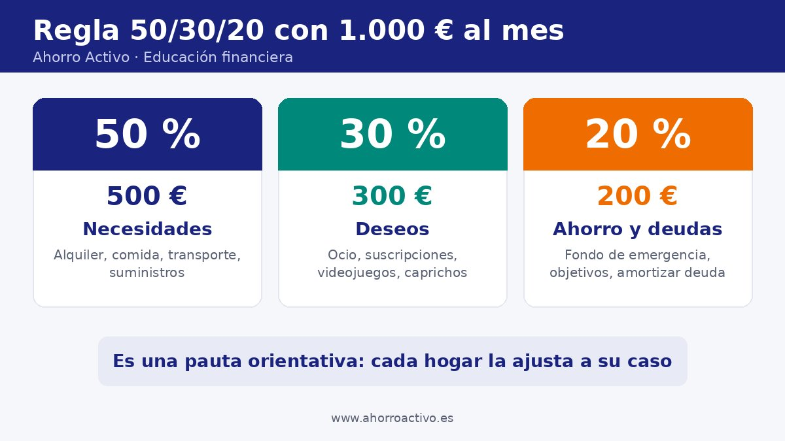

Por David Finanzas
Educación financiera |
Regla 50/30/20: cómo aplicarla con un sueldo de 1.000 € (con ejemplo)
La regla 50/30/20 es una de las pautas más conocidas para repartir el sueldo. Dice que la mitad va a necesidades, un 30 % a deseos y un 20 % a ahorro. Parece sencilla, pero la duda de siempre es cómo clasificar cada gasto y qué hacer si tu reparto real no coincide. Aquí lo resolvemos con un ejemplo completo de 1.000 euros netos al mes.

Qué es la regla 50/30/20
Es un método para repartir tus ingresos netos, es decir, lo que cobras después de impuestos y cotizaciones. El 50 % se destina a necesidades, el 30 % a deseos y el 20 % a ahorro y devolución de deudas. No es una ley ni una norma oficial: es una pauta orientativa para tener un punto de partida cuando haces tu presupuesto mensual.
Cómo clasificar cada gasto
Las necesidades son lo que no puedes dejar de pagar sin que te afecte en lo básico: vivienda, comida, transporte para trabajar o estudiar, suministros y seguros imprescindibles. Los deseos son lo que mejora tu día a día pero podrías recortar: ocio, salidas, suscripciones, videojuegos o ropa que no necesitas. El ahorro incluye lo que apartas para imprevistos u objetivos y también lo que pagas de más para reducir una deuda.
Hay gastos que caen en una zona gris. El móvil puede ser necesidad, pero un plan caro con muchos datos ya tiene algo de deseo. Lo importante es que decidas el criterio y lo mantengas mes a mes.
Ejemplo con 1.000 euros netos
Imagina a Lucía, un personaje inventado que cobra 1.000 € netos al mes. Sus gastos son alquiler 320 €, comida 130 €, transporte 50 €, ocio 200 €, suscripciones 60 €, videojuegos 90 € y ahorro 150 €. Las cifras son un ejemplo para entender el método.
| Bloque | Lucía gasta | Porcentaje | Regla 50/30/20 | Desvío |
|---|---|---|---|---|
| Necesidades (alquiler 320 + comida 130 + transporte 50) | 500 € | 50 % | 500 € | 0 € |
| Deseos (ocio 200 + suscripciones 60 + videojuegos 90) | 350 € | 35 % | 300 € | +50 € |
| Ahorro | 150 € | 15 % | 200 € | -50 € |
Sus necesidades suman exactamente la mitad del sueldo, así que ahí no hay desvío. En deseos gasta 350 € (el 35 %) frente a los 300 € que marca la regla, es decir, 50 € de más. Y ahorra 150 € (el 15 %) en lugar de 200 €, que son 50 € de menos. Los dos desvíos son el mismo dinero: lo que se pasa en deseos es justo lo que le falta al ahorro.
Cómo leer el resultado
Que haya un desvío no significa que lo haga mal. Significa que tiene una decisión por delante. Si quisiera acercarse a la pauta, podría mover 50 € de deseos a ahorro, por ejemplo revisando las suscripciones y los videojuegos con el método de cuánto cuestan tus suscripciones al año. Si prefiere mantener su ocio, también es una opción válida, siempre que sepa que ahorra un 15 % y no un 20 %.
Cuándo la regla no encaja
- Si el alquiler es alto y las necesidades pasan del 50 %, puede salir un reparto como 60/20/20 o 65/15/20. Es habitual con sueldos bajos o en ciudades caras.
- Si tienes una deuda cara, quizá tenga sentido dedicar más del 20 % a amortizarla. Puedes ver cuánto pesa con la calculadora de endeudamiento.
- Si tus ingresos cambian de un mes a otro, calcula el reparto sobre tu ingreso más bajo habitual.
- Si todavía no tienes colchón, el primer destino del ahorro suele ser el fondo de emergencia.
Cómo aplicarla paso a paso
- Calcula tus ingresos netos mensuales.
- Multiplica por 0,5, por 0,3 y por 0,2 para obtener tus tres límites.
- Apunta tus gastos del último mes y clasifícalos en necesidades, deseos y ahorro.
- Compara con los límites y mira dónde está el desvío.
- Decide un ajuste pequeño y revísalo el mes siguiente. Si quieres comprobarlo con tus cifras, usa la calculadora de presupuesto mensual.
Errores comunes
- Calcular sobre el sueldo bruto en lugar de sobre el neto.
- Meter todo en necesidades para que el reparto salga bien.
- Olvidar los gastos que se cobran una vez al año.
- Tomar la regla como una obligación y no como una referencia.
- No revisar el reparto cuando cambian los ingresos.
Preguntas frecuentes
¿Se calcula sobre el sueldo bruto o el neto? Sobre el neto, que es el dinero que realmente llega a tu cuenta cada mes.
¿Dónde van las deudas? Los pagos mínimos de una deuda suelen contarse como necesidad. Lo que pagas de más para amortizarla se cuenta dentro del 20 %.
¿Y si mis necesidades superan el 50 %? Es frecuente. La regla es una referencia, no un límite. Puedes ajustar el reparto y buscar recortar primero en deseos.
Fuentes y más información
- Finanzas para Todos: portal de educación financiera del Banco de España y la CNMV.
- Banco de España – Planifica tus compras para evitar caer en el sobreendeudamiento: consejos para planificar el gasto.